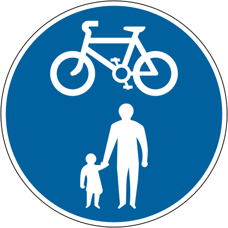

Loading...

Shared route for pedestrians and cyclists
🔵 Mandatory Signs
📖 Description
This sign indicates a shared-use path where pedestrians and cyclists use the same space without separation. Both must be cautious and respect each other’s presence.